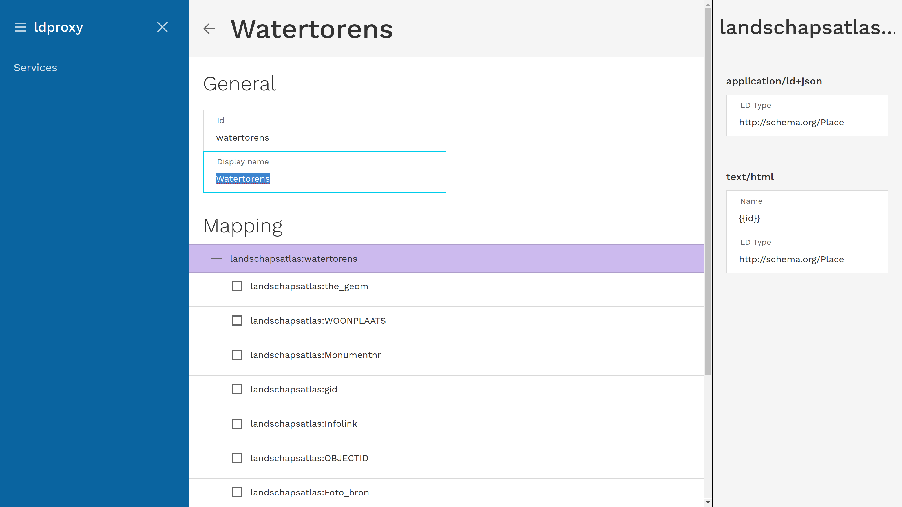
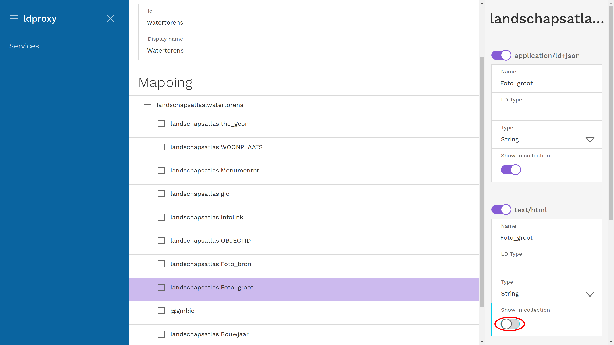
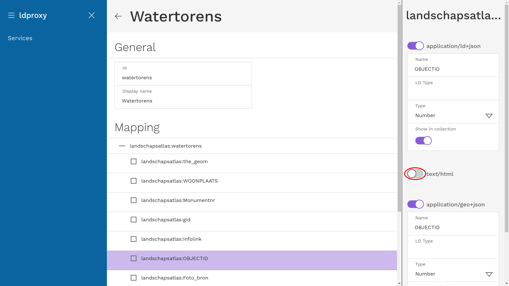
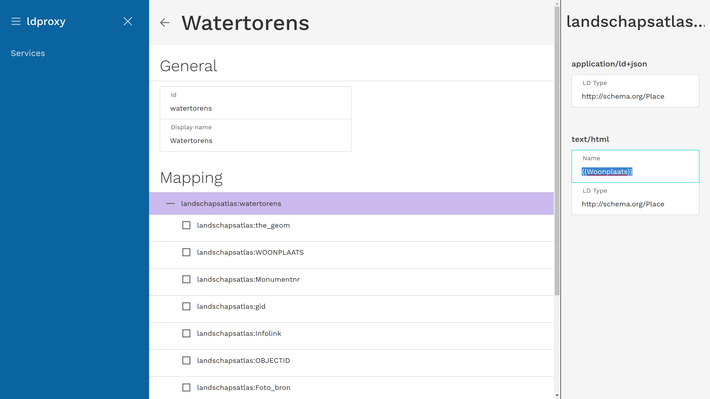

Changing the service configuration
Using the ldproxy manager you can also change the configuration of proxy services. Here we will explain a few typical changes that are often helpful to improve how the feature data is displayed in the HTML pages.
Change the label used to display a feature type to a more human friendly name
For example, let's change lands2:watertorens to Watertorens.
In the detail view for the service, click on lands2:watertorens at the bottom.

This will open the detail view for the feature type. Change the Display name from lands2:watertorens to Watertorens.

Change the label used to display a property of a feature type to a more human friendly name
For example, change WOONPLAATS to Woonplats.
In the detail view for the feature type, click on landschapsatlas:WOONPLATS. This will open the mapping configuration for the property on the right.
Change the Name under text/html from WOONPLAATS to Woonplats.

Remove an attribute from the overview pages
For example, disable that Foto_groot is shown in the overviews.
In the detail view for the feature type, click on landschapsatlas:Foto_groot. This will open the mapping configuration for the property on the right.
Disable the switch for Show in collection under text/html.

Suppress an attribute everywhere
For example, disable that OBJECTID is shown in the overviews and the page of each feature.
In the detail view for the feature type, click on landschapsatlas:OBJECTID. This will open the mapping configuration for the property on the right.
Disable the switch for text/html.

Change the label of a feature to a more useful name
By default, the label will use the gml:id of the feature as an identifier, which in many cases will be of no use for a user.
For example watertorens.1 will not be a useful name for a user. A better fit would be the name of the municipality.
In the detail view for the feature type, click on landschapsatlas:watertorens. This will open the mapping configuration for the feature type on the right.
Change the Name under text/html from {{id}} to {{Woonplats}}.
